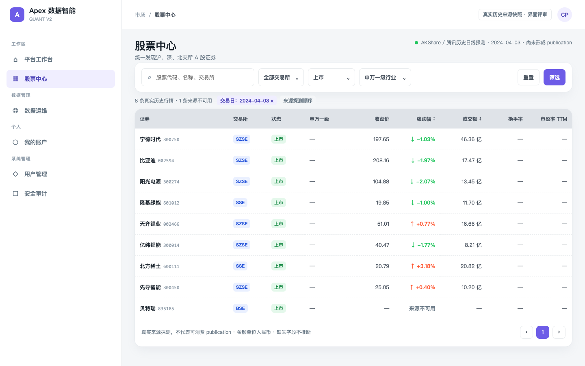
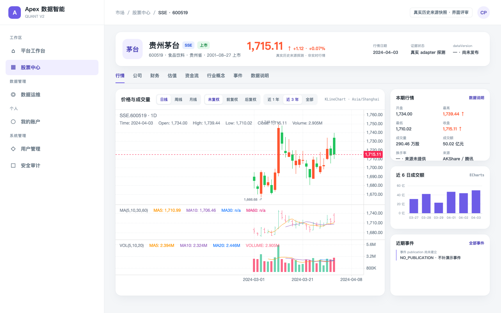
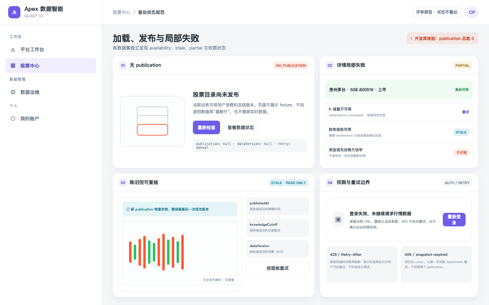

01 / RUNTIME
调研起点的开发库没有 publication
初始只读查询确认 dataset_publication 总行数为 0，因此实现保留了“数据尚不可用”
的稳定状态。隔离联调环境只通过真实来源建立 publication，任何环境都不能退回 fixture、
可变表最新行或自行推断数据。
统一承载 A 股证券发现、上市生命周期、公司资料、K 线、复权、公司行动、财务、估值、 资金流、行业概念与证券事件。方案以仓库当前真实代码、契约和本机开发库 publication 为依据，不把 ORM 模型、研究态来源或 fixture 描述成已可消费数据。
初始只读查询确认 dataset_publication 总行数为 0，因此实现保留了“数据尚不可用”
的稳定状态。隔离联调环境只通过真实来源建立 publication，任何环境都不能退回 fixture、
可变表最新行或自行推断数据。
身份、生命周期、日/周/月线、复权、公司行动、公司概况、财务、估值、分类和事件已有 service-web → POST API 代码路径；运行审计尚未形成可读 current publication。资金流只接状态边界， 因方法学尚未完成 validated 而明确不可用。
POST /api/v1/equities/search 只读取
equity.discovery.eod 的单一冻结 publication，在服务端完成筛选、排序和游标分页；
浏览器不再通过逐证券 N+1 请求拼接股票列表；无 current publication 时该路由返回稳定
NO_PUBLICATION，而非空列表或示例数据。
交易所“暂停上市”仍没有已验证 producer，资金流仍没有 validated 方法学和生产 publication； 两项都以 NOT_COVERED / UNAVAILABLE 原因化。普通停牌、申万成分、历史股本和市值链已独立实现， 不拿普通停牌冒充生命周期，也不从供应商市值字段反推股本。
| 验证项 | 必须存在的可审计证据 | 当前结论与失败行为 |
|---|---|---|
| 代码与路由 | Web、公开 POST API、data-sync reader 的实现、严格 schema 与错误投影。 | 已存在；仅证明代码路径，事实读取仍必须命中 current publication。 |
| 来源批次身份 | dataset/capability + exchange + period + provider + upstreamSource + methodology/version + sourceBatchId + observedAt + adapterVersion + schemaFingerprint + sourceSnapshotSha256。 | 来源批次缺失、不可读或无法校验时，该数据集显示 SOURCE_UNAVAILABLE 或 QUARANTINED；不得用 adapter 名称或模型行补位。 |
| 交易所 coverage | 身份目录与 K 线/复权分别按 exchange/period 保存来源批次、窗口、质量和 publication。 | BSE 的 1d|1w|1mo 与复权没有有效 coverage 时返回 SOURCE_EXCHANGE_UNAVAILABLE，不渲染空图，也不以身份可见推断行情可见。 |
| 质量 + 真实 publication | 真实 sourceBatchId、raw/object 摘要或失败证据、质量结果、冻结 component manifest 与当前 dataset_publication 全部可回溯。 | 缺任一项为 NO_PUBLICATION/PARTIAL/STALE/coverage-unavailable；不能把表模型、可变最新行或 fixture 投影给用户。 |
| 容量 + 三服务 E2E | data-sync 容量实测与 API→浏览器真实抽样；同一 dataVersion 从 source batch 可追溯。 | 作为上线验收；超预算不推进新 current pointer，页面继续展示上一版本的 STALE 状态。 |
publicationId + dataVersion，其中来源批次、provider、
methodology、observedAt、coverage 与 manifest 必须一致。任一来源证据或质量结果缺失时，页面按无 publication
处理，不从缓存、当前 catalog 或旧行恢复行情、详情或事件。
/market/equities 统一 A 股发现页。/market/equities/:exchange/:symbol 个股工作区。/instruments/:symbol fixture 路由迁移。/market/equities/:exchange/:symbol 是唯一详情身份边界；
/instruments/:symbol 只查询稳定目录并在唯一命中时携带
effectiveAsOf 跳转，不按代码前缀猜交易所。
“初始 publication”针对调研时的本机 data-sync PostgreSQL，彼时总表为 0 行；“实现状态”以当前 三服务源码为准。隔离环境的真实 publication 验证结果记录在第 12 节，不能据此推断生产环境状态。
| 数据集 / 页面能力 | 同步状态 | 存储模型 | 内部 API | 公开 API | Web 接入 | 当前 publication | 缺口与结论 | 分级 |
|---|---|---|---|---|---|---|---|---|
| 证券目录、代码、名称、交易所 | 已实现三所目录、稳定聚合与双时态身份 | equity_instrument、identifier/name version、publication component |
有：目录 / 单证券 | POST /api/v1/equitiesPOST /api/v1/equities/:exchange/:symbol |
已接入列表、详情与旧路由解析 | 初始库无；隔离真实验证见第 12 节 | 轻量目录保留稳定身份查询；富筛选、排序和分页统一由 discovery search 承载。 | A |
| 上市 / 暂停上市 / 退市生命周期 | 双时态状态与历史 revision 已实现；当前没有已验证的 SUSPENDED producer | equity_listing_status_version |
有：状态历史 | POST …/listing-status-history |
已接入 | 依各身份 publication；SUSPENDED 当前 NOT_COVERED | LISTED/DELISTED 可用；普通停牌独立展示，不能冒充“暂停上市”。 | A 已覆盖状态D SUSPENDED |
| 普通停牌 / 复牌日状态 | 独立 canonical 链已实现，只接收来源明确记录 | trading status revision / publication component | 有：discovery component | POST /api/v1/equities/search |
筛选、徽标与状态说明 | 按观测日独立发布 | 与最终 bar 对账；未验证市场覆盖返回 NOT_COVERED，不从无记录推断正常交易。 | A 有来源覆盖 |
| 公司概况 | 同步、revision 与 publication 已实现 | equity_profile_version |
有 | POST …/company-profile |
已接入 | 按证券独立 publication | 字段含公司名、英文名、法人、成立日、网站、地址、主营、范围和简介；industry 是来源自由文本。 | A |
| 未复权日线 | 已实现按证券同步、revision、年度分区与 publication | equity_daily_bar |
有：日期窗口 | POST …/barsperiod= 1d|1w|1mo |
详情行情页签已接入 | 按证券/周期独立 publication | 已有 OHLC、成交量（股）、成交额（CNY）、可空换手率、isFinal；没有昨收和涨跌幅字段。 | A |
| 原生周线 | 已实现独立上游周期，不由日线聚合 | equity_weekly_bar |
有 | 已接入 | 按证券/周期独立 publication | 与日线 publication 独立失败、独立陈旧。 | A | |
| 原生月线 | 已实现独立上游周期，不由日线聚合 | equity_monthly_bar |
有 | 已接入 | 按证券/周期独立 publication | 与日/周线 publication 独立。 | A | |
| 前复权 / 后复权 / 因子 | 累计后复权因子同步与查询时复权已实现 | equity_adjustment_factor |
有 | POST …/adjustment-factorsbars adjust= qfq|hfq |
已接入 | 按证券独立 publication | 因子覆盖不足返回 409；复权口径必须显示 adjustAsOf，不能混接两个版本。 | A |
| 分红、送股、转增公司行动 | 同步、revision 与 publication 已实现 | equity_corporate_action_version |
有 | POST …/corporate-actions |
已接入 | 按证券独立 publication | 含公告、登记、除权日及每 10 股现金/送股/转增；可作为 K 线标记和事件页来源。 | A |
| 财务报告与报表行项目 | typed 同步、PIT revision、质量门和 publication 已实现；等待真实首发来源批次 | financial_report*、financial_statement_fact |
有：列表 / 详情 | POST …/financial-reportsPOST …/:reportRef |
已接入财务页签 | 按证券独立 publication | 精确 publication 缺失时为 503；允许保留真实上市前 issuer 报告历史，报告期不反推上市状态。 | A |
| 供应商财务指标 | 模型、同步、方法学与 publication 已实现；等待真实首发来源批次 | provider_financial_metric_revision |
有 | POST …/financial-metrics |
已接入 | 按证券独立 publication | 必须显示 PROVIDER 来源、period basis、methodology code/version，不能与披露值混名。 | A |
| 平台衍生财务指标 | 公式版本、冻结输入和血缘 publication 已实现 | derived_financial_metric_revision + derivation input |
有 | 已接入 | 按证券独立 publication | UI 必须区分 PLATFORM_DERIVED，并展示 formulaVersion / input dataVersion。 | A | |
| 历史估值 | 供应商观察 revision 与 publication 已实现；等待真实首发来源批次 | valuation_observation_revision |
有 | POST …/valuations |
已接入 | 按证券独立 publication；列表为可选 component | 指标字典驱动，可承载 PE/PB/股息率等；不是官方最终值，列表只展示 discovery 冻结观察。 | A |
| 个股日频资金流 | 模型与 reader 存在；无控制面 canonical producer，研究方法失败关闭 | money_flow_series 及方法学模型 |
有：方法学 / 日序列 / 排行 | POST /api/v1/market/money-flow/… |
只接入明确不可用状态 | 无生产 publication | 方法学尚未完成 validated，且无完整 EOD 来源批次；详情和列表都不请求或展示未发布观察。 | D 暂不支持 |
| 行业 / 概念目录 | Eastmoney industry / concept 目录、K 线与 EOD 已实现 | sector catalog、bar、EOD publication | 有 | POST /api/v1/market/sectors… |
已接入 | 按目录/板块独立 publication | 供应商分类体系必须显式标识，不等同于申万。 | A |
| 证券所属行业 / 概念 | 固定 release 的当前观测 membership 已实现 | sector membership observation / release | 有：正向 / 反向 | POST /api/v1/market/equities/:exchange/:symbol/sectors |
详情与列表筛选已接入 | 按 release 独立 publication | asOf 选择观察 release，不代表真实调入调出日；列表只在 discovery 内服务端聚合。 | A |
| 申万 taxonomy 与行业估值 | 三级 taxonomy、父级闭包和估值 publication 已实现 | SW node / closure / valuation | 有 | POST /api/v1/market/industries/sw/list…/valuations |
详情路径与行业页已接入 | taxonomy 与估值独立 publication | taxonomy、行业估值和股票归属各自保留版本，不能合并为一个“行业版本”。 | A taxonomy |
| 证券—申万行业归属 | 当前快照同步与 publication 已实现 | SW membership release / item | 有：股票正向归属 | POST /api/v1/market/equities/:exchange/:symbol/sectors |
详情与列表筛选已接入 | 按 observationDate 独立 publication | 使用真实三级成分当前快照；不把“纳入时间”推断为完整历史进出区间。 | A 当前快照 |
| 龙虎榜 | typed 同步、控制面 producer 与 SQL reader 已实现 | dragon tiger event / seat revision | 通用 query | POST …/events/search |
事件页签已接入 | 按事件族独立 publication | API 在 data-sync 内按 exchange+symbol 解析身份，不向 Web 暴露 entityRef。 | A |
| 大宗交易 | typed 同步、控制面 producer 与 SQL reader 已实现 | block trade execution revision | 通用 query | 事件页签已接入 | 按事件族独立 publication | 真实 31 天窗口允许合法空集；非空记录严格限定目标证券身份。 | A | |
| 业绩预告 / 快报 | typed 同步、控制面 producer、有界重试与 SQL reader 已实现 | corporate event / revision / document | 通用 query | 事件页签已接入 | 按事件族独立 publication | 网络、429 和 5xx 只在总预算内有界重试；普通 4xx 或 schema 漂移失败关闭。 | A | |
| 公司公告目录 | descriptor 与模型存在，但不在 readable dataset 白名单 | disclosure_document |
catalog 可见，SQL reader 缺失 | 无 | 无 | 无 | “模型存在”不代表可消费；当前查询会 SOURCE_UNAVAILABLE。 | C |
| 总市值 / 流通市值 | 历史股本同步、revision、publication 与派生已实现 | share capital revision / discovery component | 有：discovery reader | POST /api/v1/equities/search |
列表可选列已接入 | 作为 discovery 可选 component | 按生效日选择真实总股本/流通 A 股并乘同日未复权 close；缺任一输入即 null + 原因。 | A 有覆盖时 |
| 统一股票列表横截面 | providerless discovery producer 已实现 | discovery snapshot / component manifest | 有：冻结 search reader | POST /api/v1/equities/search |
股票列表已接入 | 按 asOf 独立 publication | BASE 覆盖全目录；可选组件缺失时 PARTIAL + nullReason，资金流固定 UNAVAILABLE。 | A |
exchange=SSE|SZSE 的真实来源批次与 coverage 读取；
exchange=BSE 没有 coverage 时必须在 API 与页面返回
SOURCE_EXCHANGE_UNAVAILABLE 或 coverage-unavailable，不返回空 K 线、
估算复权值或跨交易所替代值。其他数据集也必须逐 cell 命中真实 publication。
| 字段 | 当前数据 | 当前公开 API | 股票列表结论 |
|---|---|---|---|
| 代码 / 名称 / 交易所 / 上市生命周期 | 已有且已冻结契约 | 目录 API 已有 | 可直接实现 |
| 普通停牌 / 复牌 | 独立交易状态数据集已实现 | discovery search | 来源覆盖内直接实现 |
| 收盘价 / 成交额 / 换手率 | 逐证券 bar + discovery component | discovery search | 直接实现；缺组件时原因化 |
| 涨跌额 / 涨跌幅 | 在冻结横截面内由两个可比收盘价派生 | discovery search | 直接实现 |
| PE / PB / 股息率等估值 | 逐证券方法学观察 + discovery 可选组件 | 历史 API + discovery search | 有合格组件时实现 |
| 个股资金流 | 仅有模型/reader；无 validated 方法学和 current publication | 路由存在但数据集返回 UNAVAILABLE | 暂不支持；明确 UNAVAILABLE |
| 行业 / 概念 | Eastmoney membership 当前观测可存在 | 按股票反查或按板块查成分 | 补服务端集合过滤 |
| 申万行业 | 当前三级成分 observation snapshot | sector leaf + discovery search | 当前快照直接实现 |
| 总市值 / 流通市值 | 历史股本 × 同日未复权 close | discovery search | 输入均有合格版本时实现 |
/market/equities
股票中心默认入口；固定桌面壳内展示检索、筛选、结果表、publication 摘要与 cursor 分页。
/market/equities/:exchange/:symbol
唯一个股 canonical URL；exchange 为 SSE|SZSE|BSE，
symbol 为六位代码，身份解析不依赖代码前缀猜测。discovery 每行同时返回
identityAsOf；历史退市或代码复用行必须导航为
?asOf=identityAsOf，当前唯一身份可省略。URL 不暴露内部 UUID。
publishedAt、
effectiveAsOf、dataVersion 和 quality。
/market/equities ?q=新能源 &exchange=SSE&exchange=SZSE &status=LISTED &tradingStatus=TRADED §orScheme=eastmoney.industry §orCode=... &swLevel=3 &sort=amountCny &order=desc &pageSize=50 &dataVersion=... &cursor=...
snapshot-expired 时清空 cursor、
保留其余筛选并回到新版本第一页，同时给出非阻塞说明。
dataVersion。版本已清理返回 snapshot-expired，不由 Web 伪造历史结果。
exchange + symbol + instrumentId 顺序。/instruments/:symbol 不含 exchange。
兼容期内旧路由只做身份解析，不继续渲染 fixture。观察访问量和解析失败率后再移除； 本方案不定义具体期限，由上线计划评审确定。

个股能力全部归入本模块，不再拆分独立方案。默认页签为“行情”，但证券身份头始终优先于任何分析数据； identity 失败时整个详情不可继续，其他数据集按面板独立失败。
publishedAt、更新时间、quality 与 dataVersion 摘要。| 优先级 / 页签 | 内容 | 当前数据来源与公开 API | 图表 / 状态 | 分级 |
|---|---|---|---|---|
| 0 · 固定身份头 | 身份、名称、交易所、状态、上市日期、最近 EOD bar、publication 摘要 | POST /equities/:exchange/:symbol + POST …/bars |
无报价时保留身份；标注非实时 | A |
| 1 · 行情（默认） | SSE/SZSE：日/周/月 K 线、未复权/qfq/hfq、MA、VOL、成交量、成交额、换手率、公司行动标记；BSE：只显示不可用原因，不装载 K 线。 | bars + adjustment-factors + corporate-actions |
KLineChart；三个 dataset 独立状态；仅在 SSE/SZSE 命中有效来源 coverage 后装载。 | A |
| 2 · 公司 | 公司概况、业务简介、联系方式、证券身份有效期、名称与生命周期历史 | company-profile + identity + listing-status-history |
文本、描述列表、生命周期表 | A |
| 3 · 财务 | 报告列表、三表行项目、供应商指标、平台衍生指标、报告期/范围/币种/修订 | financial-reports / :reportRef / financial-metrics |
表格优先；少量趋势用 ECharts | A |
| 4 · 估值 | 按 metric + methodology 的历史 PE/PB/股息率等供应商观察 | POST …/valuations |
ECharts；显示 finality=PROVIDER_OBSERVATION | A |
| 5 · 资金流 | 方法学说明、日频 gross inflow/outflow、net amount、net ratio、bucket/window | methodologies + equity daily-series |
当前固定显示 UNAVAILABLE；不加载 ECharts 或研究序列 | D 暂不支持 |
| 6 · 行业概念 | Eastmoney industry / concept 当前观测归属；申万一级/二级/三级路径 | POST /market/equities/:exchange/:symbol/sectors；各体系独立 publication |
供应商标签；当前 observationDate，不伪造历史调入调出 | A |
| 7 · 事件 | 公司行动、龙虎榜、大宗交易、业绩预告/快报；公告目录后续接入 | POST …/events/search；请求独立携带 asOf 身份锚点 |
按事件族独立分页；事件窗口不得跨证券身份有效期 | A |
| 8 · 数据说明 | 每个 dataset 的来源标签、方法学、更新时间、publishedAt、knowledgeCutoff、quality、dataVersion；bars 另列 coverageVersion、publicationKind、sourceBatchId；不显示内部 URI、凭据、原始载荷或数据库键 | 各 API release/meta/header | 不以一个“页面更新时间”覆盖全部数据 | A |
adjust=qfq，以明确 adjustAsOf 锚定。adjust=hfq，使用累计因子，不把调整价存回 raw bar。
| 状态类别 | 归属 | 示例 | 约束 |
|---|---|---|---|
| 远程服务状态 | TanStack Query | items、release、availability、error、ETag、nextCursor | 不复制进全局 store；每个 dataset 独立 query / retry / stale。 |
| 可分享业务状态 | React Router URL | q、exchange、status、sector、sort、cursor、tab、period、adjust、date range、metric、methodology | 解析后规范化；无效值回默认并替换 URL。 |
| 短暂 UI 状态 | 组件 local state | 筛选面板开关、hover、行展开、重试提示 | 刷新可丢失，不进入 URL。 |
| 用户偏好 | 版本化 localStorage | 可选列、表格密度 | 不保存 cursor、数据值、权限或 publication；schema 变更可清除。 |
| 高频图表状态 | KLineChart / ECharts 实例 | hover、十字线、缩放、可视范围、overlay | 不触发 React 高频重渲染；period/adjust/显式日期范围仍回写 URL。 |
["equities", "search", normalizedUrlState] ["equity", exchange, symbol, "identity", asOf, knownAt] ["equity", exchange, symbol, "data-status", families, asOf, knownAt] ["equity", exchange, symbol, "bars", period, adjust, adjustAsOf, start, end, cursor] ["equity", exchange, symbol, "factors", start, end, cursor] ["equity", exchange, symbol, "corporate-actions", start, end, cursor] ["equity", exchange, symbol, "financial-reports", query] ["equity", exchange, symbol, "financial-metrics", origin, methodology, query] ["equity", exchange, symbol, "valuations", metric, methodology, query] ["equity", exchange, symbol, "money-flow", methodologyId, methodologyVersion, bucket, query] ["equity", exchange, symbol, "sectors", scheme, asOf] ["equity", exchange, symbol, "events", asOf, families, start, end, knownAt, cursor]
Query key 包含请求输入，不把响应 dataVersion 反向塞入 key。dataVersion、ETag 和 release 作为缓存数据元信息保存；cursor 链响应若出现版本变化则整体作废。
当 exchange=BSE 时，行情页签不创建 bars 或 factor query key，也不动态 import
KLineChart；只读取身份与 data-status 并展示 fail-closed 原因。身份可见不能触发“试一次看看”的来源请求。
X-Data-Version 等于缓存实体；任一缺失或不一致均 fail closed。
| Query 类别 | 建议 staleTime | 建议 gcTime | 原因 |
|---|---|---|---|
| 目录 / discovery | 5 分钟 | 30 分钟 | 用户会频繁返回列表；ETag 复验成本低。 |
| 身份 / 生命周期 / 公司概况 | 15 分钟 | 60 分钟 | 变更频率低，仍需 publication revalidate。 |
| 当前 K 线窗口 | 5 分钟 | 30 分钟 | 日线可能在发布后修订；不代表 5 分钟行情。 |
| 历史 K 线页 | 30 分钟 | 2 小时 | 同一 dataVersion 内不可变；新 publication 由 ETag 发现。 |
| 财务 / 估值 / 事件 | 30 分钟 | 2 小时 | 低频发布，按页签加载。 |
| 资金流方法学目录 | 24 小时 | 48 小时 | 治理元数据变化低频；序列本身独立缓存。 |
API 与同步影响不再作为“工作名”或待决项。本方案与 service-api 0007、 service-data-sync 0032 组成同一实施单元；本次不创建 OpenAPI/ADR。源码路径、数据集与状态语义已落地， 真实 publication E2E 仍待首发执行；资金流尚未形成可比较的 EOD 来源批次和完成的方法学。
POST /api/v1/equities、POST /api/v1/equities/:exchange/:symbol、
POST …/listing-status-history。
POST …/bars、…/adjustment-factors、
…/corporate-actions、…/company-profile。
POST …/financial-reports、…/:reportRef、
…/financial-metrics、…/valuations。
| 公开 POST 路径 | 职责 | Web 消费 | 兼容性 |
|---|---|---|---|
/api/v1/equities/search |
单一 discovery publication 上完成代码/名称/交易所、生命周期、普通停牌、行业/概念/申万、行情、市值和估值筛选排序分页；资金流列当前只返回不可用能力状态。 | 股票列表唯一富查询；capabilities 返回 sortFields/columns/maxLimit，components 与行级 nullReason 独立表达可用性。 | additive；既有轻量 /equities 不扩成宽表。 |
/api/v1/equities/:exchange/:symbol/events/search |
由 data-sync 在 publication 内解析身份，查询公司行动、预告、快报、龙虎榜和大宗交易。 | 事件页签；不接触内部 UUID。 | additive；generic market-data query 保留。 |
/api/v1/equities/:exchange/:symbol/data-status |
返回各详情数据集 availability、freshness、publication、sourceLabel 与 methodology。 | 页头/数据说明和面板状态判定。 | additive；不取代事实查询。 |
equity.discovery.eod 绑定 component manifest 和方法学。
| 当前缺口 | 固定来源 / 口径 | 目标数据集 | 页面能力 |
|---|---|---|---|
| 普通停牌 | 使用真实 Eastmoney stock_tfp_em 的来源明确记录；未知市场标签与未验证 BSE 覆盖原因化，与最终 bar 对账且不混入暂停上市 |
equity.trading_status.1d |
状态筛选、徽标与合法无 bar 原因 |
| 证券—申万归属 | 真实 sw_index_third_cons 当前快照；不以公司概况行业替代 |
sector.sw2021.membership.snapshot |
申万一/二/三级筛选和详情归属 |
| 历史股本 / 市值 | 真实 stock_zh_a_gbjg_em；未复权 close × 生效中的总股本/已上市流通 A 股 |
equity.share_capital.reported |
总市值、流通市值、股本历史 |
| 全市场列表 | 同一 asOf 的身份、bar、股本、估值和分类 component；资金流 component 固定 UNAVAILABLE | equity.discovery.eod |
全部富列服务端筛选、排序与 cursor 分页 |
| 事件身份桥接 | 内部 exchange+symbol → immutable security；不公开 entityRef | 专用 event reader | 龙虎榜、大宗、预告、快报完整接入 |
SOURCE_EXCHANGE_UNAVAILABLE，只能失败关闭，绝不能写成合法空集、PARTIAL 数据值或完成全量。
上游没有历史时显示 coverage start，不生成补造行。
| 状态 | 判定 | 股票列表 | 个股详情 | 自动重试 |
|---|---|---|---|---|
| 初次加载 | 无缓存且 query pending | 保留筛选几何的表头/行 skeleton | 先身份头 skeleton；活动页签内部 skeleton | 不适用 |
| 合法空数据 | 有 publication，查询成功且 records/items 为空 | “当前筛选无结果”，提供清除筛选 | “该时间窗没有记录”，保留页签与版本 | 否 |
| 无 publication | search 返回 availability=UNAVAILABLE、reasonCode=NO_PUBLICATION；详情叶子返回 503 publication-unavailable |
页内完整不可用状态；不显示 0 条 | 身份无发布则页面级；其他数据集无发布则面板级 | 仅用户手动或低频条件复验 |
| 陈旧 stale | 已有成功缓存，新 publication 复验失败或超过数据集政策 | 保留旧表并显示版本/陈旧提示 | 只在受影响面板提示，数据只读 | 网络/503 最多 2 次，有界退避 |
| partial | identity 成功，任一非关键 dataset 失败/不可用 | 横截面 release 明确 completeness=PARTIAL | 各页签和卡片独立错误边界、独立重试 | 仅失败 query |
| 401 | 会话失效 | 保留 pathname+search+hash，进入登录；成功后恢复 URL。 | 由共享认证恢复处理，不并发重复请求 | |
| 403 | 已认证但无权限 | 隐藏无权限入口或显示稳定禁止页 | 不泄露后台角色/权限名 | 否 |
| 404 | publication 内没有该 exchange+symbol | 不适用 | 证券未找到；提供回股票中心 | 否 |
| 409 snapshot-expired | cursor / publication 已变化 | 保留筛选，清空 cursor，重启第一页 | K 线当前分页链清空并重载 | 最多自动恢复 1 次 |
| 409 adjustment-unavailable | 因子不覆盖请求窗口 | 不适用 | 复权卡说明覆盖不足；允许用户明确切换未复权 | 否 |
| 409 coverage-unavailable | 所选 period、身份、窗口与 dataVersion 没有精确成功 K 线 coverage | 不适用 | 行情面板显示“该窗口尚无可验证覆盖”；保留身份头、切换与其他页签；不能显示为空行情 | 否；仅等待同步发布后手动重试 |
| 429 | 服务端限流 | 按 Retry-After 禁用刷新并倒计时；不并发放大请求。 | 仅到期后允许手动重试 | |
| 依赖故障 / 契约漂移 | 503 dependency-unavailable 或 schema 解析失败 | 没有旧缓存则通用不可用；有缓存则 stale | 面板级；identity 故障为页面级 | 最多 2 次 |
publication-unavailable 后，详情页签显示“尚无可用发布版本”；
只有泛化 dependency-unavailable 才显示“数据暂不可用”。

dataset/capability + exchange + period 必须在生产等价 egress 记录真实来源 p50/p95、成功率、重试次数和样本量；Web 不以开发机一次成功替代这些证据。p50/p95、WAL 字节与 checkpoint、对象存储 PUT/HEAD p50/p95 和字节量、worker CPU throttling、RSS/内存上限及 OOM=0。p95 总预算不得超过收盘后 120 分钟；超预算不推进新 current pointer，页面保留上一版本并标记 STALE。在不新增 ADR/OpenAPI 的任务约束下，以三个服务内的严格 schema、DTO 和契约测试固化决策； 复用 data-sync 0031 全局 fence，并保持非 test 假数据路径关闭。
实现普通停复牌、申万 membership、历史股本、专用事件身份 reader、discovery snapshot； 对每条真实来源完成 probe、replay、migration、质量门和 publication。
覆盖沪深京全部身份，并在各交易所来源通过非空原始响应、口径、容量、coverage 与 publication 验收后覆盖其全部可用历史；
BSE K 线/复权尚无 coverage 时必须 fail closed；先生成 BASE discovery publication；
可选组件缺失时发布 PARTIAL 并逐项说明，不以等待宽表数据阻断真实基础链路；
实现 /equities/search、事件 search 与 data-status 三条 POST API。
一次完成两条 route、富列表、八页签、真实 API、URL/query/cache/图表生命周期、 无 publication、partial/stale、旧路由解析和可访问性；移除生产 fixture 依赖。
staging 从真实来源执行已具 coverage 的交易所全量同步，经 data-sync publication、API 到浏览器逐项抽样对账； BSE K 线/复权尚无 coverage 时返回来源不可用，不能以未来 probe 替代当前失败语义； 无 mock/fixture 请求且所有验收通过后，部署包含股票中心入口的 production Web 版本。
/instruments/:symbol 在兼容期保留解析页；回滚也绝不恢复 fixture 数据。| 服务 | 格式 / 静态检查 | 测试 / 构建 | 附加验证 |
|---|---|---|---|
| service-web | 既有 format、lint、typecheck 命令 | 完整 unit、build、Playwright desktop E2E | Bundle analyzer、1440/1280 截图、a11y、请求 N+1 检查 |
| service-api | 既有 format、lint、typecheck、POST-only contract guard | 完整 test、build | 公开 problem code、cursor/version、auth、ETag/204 契约测试 |
| service-data-sync | Ruff format/check、Pyright | 完整 pytest；Repository 与 publication integration | 来源批次、质量门、component 一致性、回滚与 PIT 测试 |
代码实现没有待选方向，首发仍有明确验证项：逐 cell 的真实来源批次、coverage、质量与 publication、 容量实测和三服务 E2E。它们不是“代码已实现”可以自动跳过的数据事实；无 publication 时入口显示稳定状态而非示例数据。
已发布的价格、涨跌、成交额、换手、市值与估值显示 tradeDate；资金流当前只显示 UNAVAILABLE。不出现实时、盘中或 Level-2 暗示。
身份、名称和交易所必须覆盖全部证券；生命周期与交易状态按来源覆盖返回事实或 NOT_COVERED。行情、市值、估值、资金流与分类缺失时必须为 null 并带原因和组件状态，不得伪造，也不得阻断基础证券发现。
Eastmoney industry/concept 与 SW2021 分开筛选和标注；默认行业展示 SW2021 三级，未覆盖时显示原因，不回退到公司自由文本。
默认展示 PE_TTM 与 PB 的 provider observation 仅在其来源批次、质量、coverage 与 publication 全部通过时显示；列头和数据说明展示来源标签与 method/version，不宣传为官方最终值。
当前没有默认口径：方法学尚未达到 validated，列表与详情固定显示 UNAVAILABLE。只有完成连续探针、可比性验证、完整 EOD 来源批次和方法学晋级后，才以新 publication 显示。
普通已认证用户可读股票中心；同步、回填、回滚继续走数据运维 RBAC，查看页面不会隐式触发写操作。
列表 URL 默认表达查询意图；可选 dataVersion 用于审计级快照分享。详情 URL 不强塞统一版本，各面板显示自己的 dataVersion。
固定使用 POST /api/v1/equities/:exchange/:symbol/events/search；data-sync 内部解析身份，Web 永不接触 entityRef UUID。
data-sync 先完成真实 source batch、coverage 与 publication，API 再完成严格数据版本投影，Web 最后接入；平台 owner 在质量、容量与三服务真实 E2E 全通过后部署包含股票中心入口的 Web 版本。
| 验证项 | 结果 | 说明 |
|---|---|---|
| 目标目录存在性 | 通过 | 创建前确认 Web 0007 不存在；本次扩展前又确认 service-api 0007 与 service-data-sync 0032 不存在，未覆盖既有方案编号。 |
| 当前 publication | 已核验 | 运行中的 data-sync PostgreSQL 只读查询：SELECT count(*) FROM dataset_publication = 0。 |
| 原型尺寸 | 通过 | 列表、详情、复杂状态均以 1440×900、deviceScaleFactor=1 截图。 |
| 原型浏览器错误 | 通过 | 三画面重载无 console error / pageerror；详情检测到 15 个 Canvas，图表引擎已实际渲染。 |
| 原型视口溢出 | 通过 | scrollWidth=1440、scrollHeight=900，只有一个 active screen。 |
| 设计禁项扫描 | 通过 | prototype 无 gradient、响应式 media、暗色壳、外部 CDN、实时/WebSocket/Level-2 文案。 |
| 生产代码格式 / lint / test / build | 通过 | 完整 vp check、vp test、production build 与 Docker local image 均通过；测试统计以最终 CI 运行输出为准，避免文档滞后。 |
| 真实浏览器 E2E | 进行中 | 以真实来源执行首发全量回填，完成逐 dataset/exchange/capability 的 sourceBatch、质量、coverage、publication、容量及 API→浏览器抽样证据；未形成 publication 时页面返回 NO_PUBLICATION，不使用假数据。 |
| runtime audit 公开消费判定 | VALIDATING / PENDING | 代码、路由与 adapter 存在不等于当前已有可消费数据；逐 dataset/exchange/capability 的 sourceBatch、coverage、质量、真实 publication、容量与 E2E 仍待形成全量证据。 |
| Git 操作 | 符合约束 | 未 stage、未提交、未推送、未创建 PR；未改写用户已有工作区改动。 |
service-web/src/router/index.tsx
— 股票列表、canonical 详情和 symbol-only 兼容解析路由。
EquityMarketView.tsx
— discovery 列表、publication 状态和桌面信息层级。
EquityDetailView.tsx
— 固定身份头、八页签和数据集独立失败边界。
EquityKlineChart.tsx
— KLineChart 动态加载、数据重置与实例销毁。
design-tokens.ts
— 颜色、布局、圆角与桌面 Token。
equity-instrument.controller.ts
— 证券公开 POST 路由。
equity-workspace.controller.ts
— discovery、事件与 data-status 三条统一公开 POST 路由。
equity-market-data.controller.ts
— bar、因子、行动与概况公开路由。
financial-data.controller.ts
— 财务、指标与估值公开路由。
money-flow.controller.ts
— 方法学、日序列与排行。
equity-sector-membership.controller.ts
— 证券板块反向读取。
sw-industry.controller.ts
— SW taxonomy / valuation。
0010 service-api equity instrument
0019 service-api equity market data
0014 financial valuation
0016 daily money flow
data-sync-market-data-v1.yaml
— 通用市场数据查询。
equity_master_read_repository.py
— 三所稳定目录与 prefix 查询。
equity_market_data_repository.py
— bar / factor / action / profile publication。
internal_equity_workspace_api.py
— discovery、事件和 data-status 的严格内部读取边界。
equity_discovery_repository.py
— 单一 EOD 横截面、component availability 与原子 publication。
dataset_publication.py
— dataVersion / effectiveAsOf / knowledgeCutoff。
0014 equity instrument master
0016 financial statements valuation
0017 daily money flow
0024 corporate events
0025 trading events
{kind=link}
{kind=link}
{kind=link}